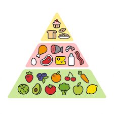

La piramide...
 La pirámide alimenticia, pirámide alimentaria, o también llamada pirámide nutricional,
es una referencia gráfica de la cantidad de los diferentes grupos de alimentos recomendados para consumir diariamente por las autoridades
sanitarias para mantenernos saludables. Es una herramienta muy útil a la hora de seguir una dieta equilibrada. Nos permite distinguir fácilmente cuales
son los alimentos que debemos consumir en mayor cantidad, los que componen la base de nuestra alimentación y los que deben estar presentes
solo de forma esporádica, o incluso opcional, como los dulces, la bollería, los refrescos….